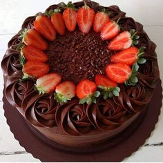

Mi receta es pastel de chocolate y la escoji porque soy fan
numero 1 del
chocolate

Ingredientes
2 tazas de harina
2 tazas de azúcar
1/2 tazas de cocoa en polvo
2 cucharaditas de polvo para hornear
2 cucharaditas de bicarbonato de sodio
1 1/2 tazas de leche de vaca
1/2 tazas de mantequilla, suave
1 cucharadita de vainilla líquida
2 huevos
1/2 cucharaditas de sal
3 tazas de azúcar glass, para el glaseado
250 gramos de chocolate amargo, para el glaseado
6 cucharadas de mantequilla, para el glaseado
6 cucharadas de agua, para el glaseado
suficiente de mermelada de chabacano
Pasos
Pre calienta el horno a 350°F y ten a mano el molde que usarás para el baño de maría.
derrita en forma homogénea.
Cocina hasta que el caramelo adquiera un color dorado.
Viértelo en el molde que usarás. Esparce el caramelo por el molde cuidadosamente hasta que cubra las
paredes del mismo. Déjalo enfriar.
Agrega los huevos y licua solo por unos segundos. Luego agrega la leche evaporada y mezcla.
Incorpora la
leche condensada y mezcla. Agrega la vainilla, el azúcar y continua mezclando hasta que obtengas una
mezcla homogénea.
Cuela y vierte la mezcla en el molde que ya tienes previamente acaramelado.
Lleva al horno a baño de María por 45 minutos.
Verifica que esté listo utilizando un palito para pinchos o un cuchillo fino. Si salen limpios
significa que ya está listo.
Sácalo del horno con mucho cuidado de no quemarte y ponlo sobre una parrilla de alambre. Deja
enfriar a
temperatura ambiente hasta que esté completamente frio.
10
Desmolda y lleva a la nevera hasta el momento de servirlo
" Mi receta fue copiada de la pagina www.kiwilimon.com"